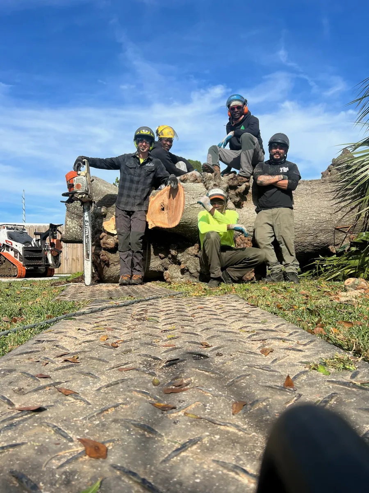
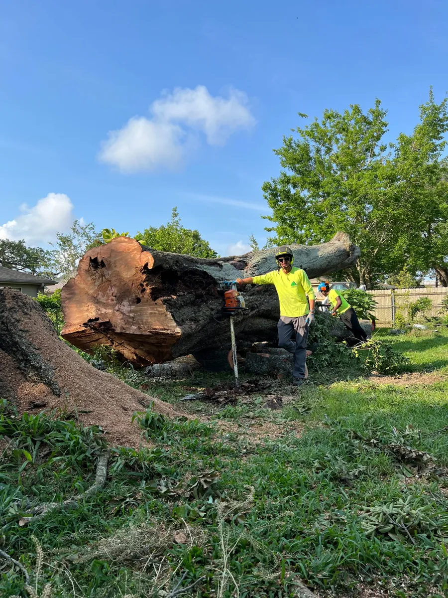

Tree Service in Audubon, LA
Preparing your property before hurricane season hits South Louisiana? A Perfect Cut provides tree care throughout the Audubon neighborhood and the University District, from a historic oak on St. Charles Avenue to routine maintenance on a wooded lot near Audubon Boulevard.
Urgent or unsafe?Call an Arborist: (504) 732-0779


About Tree Care in Audubon, New Orleans, LA
Audubon sits close to the Mississippi River on low alluvial ground with a high water table, so the soil stays wet much of the year. Near the river, in areas like the Riverbend, that wet-foot environment often leads to shallow root systems.
When hurricane-force winds come off the Gulf, waterlogged soil loses its grip and large trees can uproot. South Louisiana humidity also speeds up decay and invites pests. We look for these structural weaknesses before the next tropical system reaches the Broadway Street and Magazine Street corridors.
Hazardous Tree Assessment
Not every dangerous tree shows obvious signs of decline. Our hazardous tree assessments check for:
- Internal decay
- Root instability
- Structural weaknesses
- Disease progression
- Storm vulnerability
We provide clear recommendations so you can make informed decisions before the next major storm.
Storm Prep and Cleanup
Preparing before hurricane season cuts down on storm damage. Storm prep includes structural pruning, weak limb removal, and canopy balancing, followed by cleanup after the storm passes.
Consulting & Construction Permitting
Some tree work in New Orleans needs a permit, especially for trees on public property. We help homeowners and contractors with consulting and construction-related tree planning so projects follow city requirements.
Emergency Tree Service in Audubon, LA
When hurricanes, tropical storms, or sudden failures hit, calls are answered 24/7. We remove fallen trees, clear driveways, and secure dangerous limbs to restore safe access to your Audubon property.
Stump Grinding in Audubon
If the tree is gone but the stump remains, our stump grinding service removes it below ground level while working around nearby pipes, foundations, and healthy roots.
Why Audubon Homeowners Choose a Perfect Cut
In Audubon, tree care is a balance between keeping old trees healthy and keeping them structurally safe through storm season.
- ISA Certified Arborist: Our team includes an ISA Certified Arborist who applies science-based pruning and assessment.
- Low-Impact Methods: Our approach protects root zones and the long-term health of your trees.
Tree Removal in Audubon, LA
Removing a tree in a historic neighborhood like Audubon takes careful planning. We use rigging to handle removals in confined spaces and protect nearby historic homes and landscaping. After removal, stump grinding clears the way for new growth or construction.
Tree & Shrub Pruning
Overgrown shrubs and low limbs block sightlines, crowd walkways, and put extra stress on branches. We prune trees and shrubs to keep them clear of paths and in good shape.
Tree Trimming & Pruning in Audubon
Routine trimming helps trees handle Gulf Coast storms. Dense canopies on Audubon Boulevard can act like sails in a tropical system, so we thin crowns and reduce weight to let wind pass through and lower the risk of a blow-down. We also trim palms and prune for clearance near Black Pearl homes to keep limbs away from power lines and rooftops.
Tree Fertilization
South Louisiana’s compacted, wet soils can starve roots of oxygen and nutrients. Deep-root fertilization feeds the root zone and helps trees cope with stress.
Frequently Asked Questions by Homeowners in Audubon, LA
Do I need a permit to remove an Oak or Sycamore in Audubon, New Orleans, LA?
It depends on where the tree stands. Trees on public property, such as neutral grounds and the strip between the sidewalk and street, are City trees, and work on them requires a permit from New Orleans Parks and Parkways. For a tree on your own lot, contact Parks and Parkways or the City before work starts to confirm what applies.
How do I prepare my trees for hurricane season?
Preparation involves thinning the canopy to allow wind to pass through more easily and removing dead or widow-maker branches that could become projectiles in high winds.
What are the signs of root rot in Louisiana soil?
Signs include mushrooms growing at the base of the tree, yellowing leaves out of season, and a noticeable lean, especially after heavy rainfall or flooding.
How does the high water table in New Orleans affect my trees?
The high water table can cause wet feet, leading to shallow root systems. These trees are more prone to uprooting during storms because the roots do not penetrate deep enough into the saturated soil.
What should I do if a tree falls on my home or blocks my driveway?
Call A Perfect Cut right away. Calls are answered 24/7 for emergency tree removal and cleanup to restore safe access to your Audubon property.
Why is my palm tree dropping heavy fronds?
Overgrown palms are a liability in New Orleans. Dead fronds can fall during storms or block drainage, and our pruning service includes palm trimming to keep your yard safe.
Will stump grinding damage my existing landscaping or pipes?
We grind stumps below ground level and work around underground utilities and the roots of nearby healthy trees.
When is the best time to prune my Louisiana natives?
For many native species, late winter or early spring is ideal. Hazardous limbs, though, should come down right away, regardless of the season, to prevent storm damage.
Things to Do in Audubon, New Orleans, LA
- Explore Audubon Park: Walk the 1.8-mile paved loop under the park’s live oaks.
- Visit the Audubon Zoo: Set on the river side of Audubon Park in a lush, tropical landscape.
- Stroll Magazine Street: Enjoy local boutiques and cafes along one of the city’s most vibrant corridors.
- Ride the St. Charles Streetcar: Glide under the trees along St. Charles Avenue through the University District.
Resources for Audubon Residents
- New Orleans Department of Parks and Parkways: Official guidelines for maintaining trees on public rights-of-way and the neutral grounds of St. Charles Ave.
- Audubon Nature Institute: A local resource for learning about South Louisiana’s native plants and coastal ecology.
- NOLA Ready: The City’s hub for hurricane preparedness.
- LSU AgCenter (Orleans Parish): Advice on local soil conditions, Formosan termite prevention, and native tree health.
Serving the Heart of Audubon & Surrounding Neighborhoods
We provide tree care throughout Audubon, the Riverbend, and Uptown New Orleans.
Call A Perfect Cut Tree Service for an evaluation:(504) 732-0779

Tree Facts about Audubon, New Orleans, LA
- The Sail Effect: In a tropical storm, a dense canopy acts like a sail and catches strong gusts. Thinning lets wind pass through the tree and lowers the risk of uprooting in saturated soil.
- Termite Vulnerability: Dead stumps and decaying wood attract Formosan termites in South Louisiana. Removing stumps is one way to protect nearby historic homes.
- Alluvial Soil Stress: Trees in Audubon can suffer root suffocation from high water tables and heavy, wet soils., which adds stress through hot, humid Louisiana summers.
- Protected Status: Trees on public property in New Orleans, including neutral grounds and the strip between the sidewalk and street, are City trees, and work on them needs a Parks and Parkways permit. Our team can help with that permit process.
Keep Your Property Safe with A Perfect Cut Tree Service
Hurricane winds and saturated soil put real pressure on trees in Audubon and nearby New Orleans neighborhoods. Regular care keeps them stable and well kept
- Arborist-Led Safety Inspections
- Emergency Calls Answered 24/7
What to Photograph From a Safe Distance
Photos and video show us the tree, the property around it, how we would reach it, and any visible hazards.


Tree down or a broken limb?
Skip the photos and call. Calls are answered 24/7.
(504) 732-0779Office hours: Monday to Friday 7 AM to 5 PM, Saturday 7 AM to 3 PM, closed Sunday.

Ready to Show Us Your Tree?
Show us the tree. An arborist reviews what you send. Photos give us a first look. Some trees need an in-person visit before we can make a final recommendation.